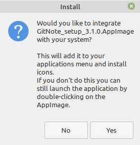
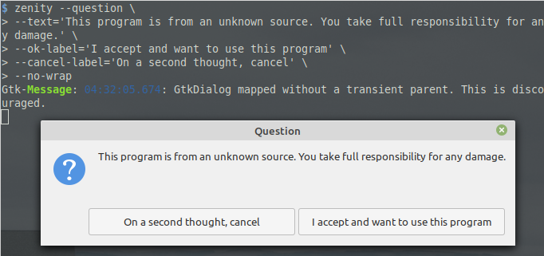

Summary
#100DaysToOffload
I’m publishing this as part of 100 Days To Offload. You can join in yourself by visiting https://100daystooffload.com
Legend says that it is better to write 100 posts for 100 consecutive days. But these are guidelines, not strict rules. If they were, I wouldn't even start. Instead I will update this post regularly. I am not writing 100 separate posts because it feels like spamming my own blog.
[Inhale]
...
[Exhale]
Here we go
1
-
Yay 😃️ I finally took on the challenge
-
Today I went to GitHub to delete many repositories I forked and abandoned over the years. One of them was my i3wm config repository. I don't worry about losing my i3 config really. What I wanted to salvage from it was my tty-clock like wallpaper generator script.
Old script didn't use variables and was hard to modify. I started rewriting it today. It was a challenge to write it back in the day and it is a challenge to rewrite it again. I am learning many things about bash while trying though. Bash scripting can be mind tickling. This is why it is fun.
-
I purchased hosting on Digital Ocean and deployed my OwnCloud instance. Some people wonder why I choosed OwnCloud over NextCloud. OwnCloud makes better pun.
2
-
I am done with desktop-clock script. Get it on github
Note: I tested the script on 1366x768 display and defaults are good for such displays. Remember to change values if you have a monitor of different size or store wallpapers in somewhere else than default.
-
I thought it would be better to send emails for my family members for them to set up their account on our shared OwnCloud instance. I tried Postfix since I don't need a feature rich email server. But configuration is too complicated for me. Using a sub-domain instead of main-domain really puts me in a difficult position.
3 - Fizz
-
I wanted to implement send-only email server to my OwnCloud instance yesterday. But it turs out, SMTP and Postfix stuff is way over my head. I will postpone it to later time.
Not to mention, I am scared to break currently working system. I should try new things in a burner (testing) server first. And only after a succesfull prototype I should go ahead and do changes in main server.
You probably knew that testing first would be a better idea. Guess what! I am a newbie who is just coming to these realizations.
-
After a long time away from Java, I tried a simple program to see if I can still right something. I wrote a program that validates ISBM-10 code.
4
I started to Computer Science degree on OSSU. You can start to CS degree during lockdown. All you have to the is to follow this curriculum.
5 - Buzz
I decided to Indiewebify myself. But I am currently using mdBook to generate static online book from my posts to use my blog. This produces an amazingly fast and clean website. But it can be difficult to implement anything from outside. There are no plugins for mdBook like there are for bloging and CMS focused systems.
It is a difficult to chose a blogging system/platform when you have over 100 choices. Thankfully I have FOSS and static pages as my constrains to filter them down to about 20. I really am seeing the benefits of saying no.
After some more research, I am inclined towards Known, thanks to its indieweb integration.
6
-
Still comparing blogging solutions. I have a new constrain to help me in my desicion. My blog will be static. I want it to run on GitHub Pages due to financial constrains. GitHub Pages is amazing for hosting a static website and costs nothing.
But I don't mind using PHP powered CMS to generate static pages and then upload static pages to hosting.
-
I wanted a landing page for a long time. In fact, having a landing page was driving force behind me purchasing this very domain, murtezayesil.me. Today, I started to do some testing and for the landing page and I forked this template. You can see my current progress here.
7
-
Wrote Hello, Linux!
-
Today I noticed that mdbook only generates HTML pages from pages linked in SUMMARY.md (in sidebar). So, when I move a link form sidebar to archive, that page will be removed form blog 😞️
This will force me to move away from mdbook. Mdbook was not meant to be a blog generator anyway.
8
I am trying Publii to see if it is a good replacement for my blog workflow. But it doesn't seem to support md files. I don't want to format everything in Publii's Rich Text Format editor. I also didn't see an option to exporting posts to md. I would like to use md because most blogging platforms has md support. Publii is the only exception in my experience.
9
I want to know Publii better. So, I wrote Collaborative Challenges Club's first challenge in Publii. Publii has few quirks but it is ok for the most part. This will also be the my chance to write a report for the blog platforms review challenge on there.
Hello, Linux!
I previously wrote about my attempt to LFS. But I didn't start using Linux after compiling the kernel, oh no. I meet Linux when I was 9th grade years old, around 2010 I believe. As a member of Project Club, I had opportunity to go to Ankara to visit Science Fair by TÜBİTAK, Scientific & Technological Research Council of Turkey. I purchased an issue of the Science Technic magazine but I was more drown to CD that came with it. It was an installer for Pardus distro.
Pardus shipped with KDE at the time and it was too heavy for our family laptop. 1.6GHz single core CPU was bottlenecked by 512MiB RAM. KDE wasn't very optimized and it was a laptop, QT didn't benefit from any kind of GPU acceleration. But Pardus had one thing that made us stick to it till that laptop never boot. WiFi and Speaker support out of the box 🎉️ Remember, only other OS I used and knew was Windows XP. And its "out of the box" support was limited to CD reader, USB mouse/keyboard. XP couldn't even play audio without a driver. That laptop lived till mid 2012 and it was ~7 years old when it died.
Fast forward to 2017, I needed a laptop for practicing C Language at hostel. I felt it was necessary to make the purchase because Turbo C++ compiler on DosBox was cumbersome at best and straight out broken at times. I settled for Lenovo Ideapad 110 which I am using right now. It has 4 CPU cores at 2.2GHz and integrated GPU for $400. It didn't have a preinstalled OS. I had to install an OS that I could afford. Because I knew about Linux, I tried Ubuntu. Graphical installer was easy to use and every single thing on the device (including microphone and bluetooth) worked flawlessly out of the box. I didn't need to open a single terminal to install the OS. After OS installation, I installed an IDE for C coding. Everything needed was installed along with it. The best thing is I wasn't hunting some executable in the internet. Today I know that every program Linux users install are tested by the developers of the OS they are using. Using Software Center/Package manager meant I was only getting software from trusted first parties, not from shady websites. This is one of the many reasons Linux is safer.
I don't know why people say Linux is difficult. Everthing worked for me out of the box.
Installing programs from Software Center means you are only installing from trusted developers. Not from shady corners of the internet.
After some time, I got an itch. I was feeling adventurous and wanted re-install everything with better partitioning. I learned that using entire 1TiB of HDD as root directory (annoted as / [slash] ) was not the best way to organize data. I wanted to make more partitions and try other distro options.
Next I installed Kubuntu. I didn't like KDE and uninstalled kubuntu-... package. I uninstalled something called Xorg in the process. As it turns out, Xorg is the program that uses GPU to provide a GUI, so that I can use browser and IDE.
Next, I installed Linux Mint 17. It was beautiful. Worked OK but I couldn't stick to it for some reason. I wanted to try something outside the Debian family.
I went Arch. This was like and overdose of Linux for me 😵️ It lived for about a week or so. I broke my system very fast. I can't blame Arch. I was amateur.
PopOS announced that they were gonna ship their own OS. I was annoyed with needing to do major updates every 6 months. After considering between Solus and Manjaro I went Solus. You can guess why not Manjaro 😜️
Solus (3.999) had 2 issues. After every update system would boot to Black Screen instead of Login screen. I had to manually boot into LTS kernel and reboot. Solus is a Rolling Release distro. In other words, I would have black screen issue multiple times a week. ... Then steam broke. This was the last drop. I hopped to Manjaro.
Manjaro is like stable Arch for an amateur like me. It was amazing and I used it for months. But Valve Proton support wasn't as good as on Ubuntu side.
Later I moved to Elementary OS. It is beautiful. Not only on appearance but in system resource usage too. It was freaking fast and light compared to my previous experiences with Linux Mint and Manjaro. I later heard that Linux Mint 19 offered much better optimized OS. I hopped.
About 2 months ago I switched to Linux Mint 19. Elementary is still installed along side it. But I never boot Elementary. Don't need to. I have my Rust coding environment in Mint. Why would I want to hop...
You are all caught up
Wait a minute. Solus Budgie seems to be working amazingly well for other people. I may install it in place of Elementary and ....
You see the cycle? I don't distro hop because I need to, at least not all the time, but because it is an adventure.
After trying many OSes, I decided to make an opinion based table according to their out-of-the-box state. Of course every distro offers an amaing level of customizability! So, there is no perfect distro. They are all amazing.
| Scored / 5 | Aesthetics | Familiarity to Windows switchers | Simplicity | System Resource Usage |
|---|---|---|---|---|
| Elementary 5.1 | 5 | 1 | 5 | 5 |
| Manjaro KDE (2019) | 3 | 5 | 3 | 4 |
| Mint Cinnamon 19 | 4 | 5 | 4 | 4 |
| Solus Budgie (2018) | 4 | 4 | 4 | 3 |
| Ubuntu GNOME 18.04 | 5 | 1 | 3 | 2 |
AppImage is great
If you distro hop a lot, you should know it can be daunting to setup your workflow again after a hype powered hop. It can be even more frustrating if packages you need are not available in local repo or require compiling. Compiling isn't really a bad thing or frustrating, but it can take long time. Let me introduce [drums ...] AppImage 🎉️. This beauty has everyting in it and it is cross-distro.
Fun Fact: Apple have been using AppImage like technology for years. If you used a Mac PC*, you probably downloaded .dmg (disk image) files to install programs which are not available on App Store. Programs in .dmg can be run without installing. Installing them is as simple as moving them to Applications directory.
* Macs are personal computers, change my mind.
AppImages are awesome but not perfect:
No installation
Pro They are portable and don't need root priviledges to install
Con They are archieves that may take few seconds to extract
Ship with their dependencies
Pro No update breaks AppImage dependency
except updates to fuse or kernel
Con They usualy are larger than normal installation from local repo
Read only
Pro No virus or malware can enter from outside
Con Any changes to settings and such are stored in
$USERprofile, not in AppImage
Honorable mentions
Pro Multiple versions can co-exist and sometimes even "co-run"
Con Most AppImages don't create application menu entry for easy access. GitNote is one of few that does it for you.

This issue can be addressed for all AppImages via appimaged
Con AppImages aren't executable by default. I know the security reason behind it and don't really mind that, but warning users with a question dialog would be better UX in my opinion

This issue can be addressed for all AppImages via appimaged
I wrote this post out of frustration because most AppImages didn't appear in applications menu like applications installed from local repo. This kinda defeats the goal of AppImage which is "one app = one file".
Tutorial - Manual
I initially wrote this tutorial for future reference for myself
As an example, I will write .desktop file for Rambox. You can follow along.
Things we need
-
AppImage of Rambox (duh)
-
rambox.desktopfile at~/.local/share/applications -
Icon
-
Move AppImage to
~/.local/bindirectory. For sake of tidyness. -
Make sure that AppImage is executable. Then run
-
Running Rambox AppImage will extract its content to
/tmp/.mount_RamboxXYZ. You can find Rambox's icons undericondirectory. Copy it to~/.local/share, it will merge Rambox's icons into local icons -
Write a
.desktopfile at~/.local/share/applicationswith below template. Remember to change every attitude according to your program.
[Desktop Entry]
# Required
# Type must be set to Application, else OS will ignore this file
Type=Application
# The name of the application
Name=Rambox
# The executable of the application, possibly with arguments.
Exec=~/.local/bin/Rambox.AppImage
# Recommended
# Comment, AKA description. This will be shown as tooltip.
Comment=All communication services in 1 place
# The name of the icon that will be used to display this entry
# This is not a path. Application icons should be copied to
# .local/share/icons/hicolor/[icon_dimension]/apps
Icon=rambox
# Describes whether this application needs to be run in a terminal
# set to true if need to launch program in terminal (such as htop,
# vim) or want to read logs
Terminal=false
# Describes the categories in which this entry should be shown
# Seperated using ';'
# For available categories, visit link below:
# https://specifications.freedesktop.org/menu-spec/latest/apa.html
Categories=Communication;Internet;
# Source: https://wiki.archlinux.org/index.php/Desktop_entries
- Enjoy
Later I found that there is a daemon for semi-automating this process.
Tutorial - Semi-Automated
-
Install
appimagedas instructed on appimaged readme - Once -
Re-login - Once
-
Move AppImage you downloaded to
~/.local/binor~/Applications- for every AppImage -
Enjoy - Always :D
Thanks to everyone who worked on development of AppImage system. It is awesome
#appimage #software #linux
Learning to (Shell) Script
This is an excessively long story of me writing a one-liner.
Recently a friend who was editing Polybar config to complete her BSPWM setup needed a way to visualize the hex-colors in config file. She did use some extension on Atom or VScode to visualize hex-colors but, according what she said, text editor got slower. That is understable since extension probably was parsing the entire file every second to find hex-color codes. She decided to toot about her need of finding an alternative way to visualize hex-colors.
I saw her toot and thought to myself "This can be a great opportunity to learn to script.". Since I used i3wm, feh and imagemagick in the past, I knew I could even write a script that could turn her wallpaper into the color she highlighted. But that is for maybe another day.
First thing is to find the color from hex-color code. Next is to turn it into an image.
-
Nice thing is that Linux has 2 clipboards:
-
Primary clipboard is cursor driven. It copies by highlighting anything and pastes by clicking with MMB (Middle Mouse Button).
-
Second clipboards is short-cut driven. It copies highlighted after pressing Ctrl+C and pastes after pressing Ctrl+V
-
Luckily for me xclip command works with primary clipboard. Reading highlighted text is simple as xclip -out or xclip -o . I owe this knowledge to this answer on Stack Exchange.
Next is to find a way to show the color in clipboard. I found this answer on Stack Exchange. Now I also know how to visualize. We can set xlogo's background color via xlogo -bg $color command where $color will be the #hex-color code.
I learned some shell stuff from books I purchased from O'Reilly. I knew that I could input a standard output of a command as argument of another command by passing the command as argument wrapped in `` (DO NOT confuse (`) with single quote (') character). This helped me to replace $color with xclip -o to make a one-liner.
# My script
xlogo -bg `xclip -o`
Meanwhile, she was making her research and read about a command called zenity. I didn't know about zenity command either. It turns out, it is a GTK dialog generator. It can display a calendar, show error pop-up, question prompt and even show color-wheel. This would allow her to see the color and even change it using the color-wheel. She was able to construct her own script with what she learned from my script.
# Olivia's script
zenity --color-selection --color=`xclip -o`
This was a great experience. I got the opprtunity to make research on the internet and read man pages which I should get used to.
This may seem novice to long time terminal users and scripters. But for me, this experience felt like a growing pain or my first steps. This is not the first time I wrote a script. But that is my first time coming up with a one-liner that is short, brief and just works.
# I modified my script a little bit to show meaningful
# error when no color is highlighted
color=`xclip -o` && xlogo -fg $color -bg $color
# This will only show the highlighted color OR an X :D
Hex-color
RGB (Red Green Blue) or RGBA (RGB Alpha) color code that is written in Hex (base 16) number system. Commonly used to define colors in webpages.
#FF0000 = Red
#008888 = Dark Turquise
Continuity
is difficult. I always had issues with starting to something then continue to do it. Either I am bad at keeping interest at something or I don't know the difference between interest and hype. Sometimes it feels like I am battling myself just to finish what I once deeply wanted to start.
Unfortunatly I am not the only one. Take GitHub as an example. It is a graveyard of personal projects.
Take this very post as another example. I am writing this just to get it out of my virtual list of "Must writes".
Sometimes I blame it on life. Life is like a boat drifting in ocean. There are thunders that will move you up and down to bring you to foreign land overnight. And then there are calm waters that still moves you but you don't notice it. You think you are stationary until you trip over and almost fall into the water, because you hit a rock that was at the horizon at some point.
I feel like I am in calm waters. Because it looks like I am just staying at home and I got all the time in the world to do whatever I want. I start doing whatever it is I wanted to do. Then something hits me. I just lose interest and start to my "project that will be Legen...dary". Finally the projects I started but never finished are a burden that I can't take anymore and I have no idea what to do next. Remember, I am kid in his early adulthood. So, I am pretty new in this life. I don't know what I want or should want from life.
This is not an article about guide on how to cope with such cases. This is a call for help. I accepted "Smart people learn from their mistakes, genius people learn from others' mistakes." as my motto. I am not saying that share your insecurities with me. I just want to learn life before it happens.
I am on mastodon.social and fosstodon.org. DM me.
I may add links to your toots after your consent.
PS: I wanted to start to 100 Days To Offload with everyone else on 25 Apr 2020. But didn't start for that very reason. I am scared to not continue. In DM please don't tell me why I should write #100DaysToOffload.
don't_fear.tar
This is my story with LFS, not a tutorial.
LFS (Linux From Scratch) is one of the weirdest project that I wanted to tackle. Not because I needed something more Arch than Arch Linux 1 but it requires a deeper understanding of Linux System and Shell to build and install, which I believe is curicial for my future SysAdmin career.
LFS Book is more of a guide than instructions manual. It doesn't only give you shell commands with bunch of arguments but also describe what each each arguments mean and how to use them. In my opinion, it is the man pages for dummies.
LFS uses tarballs, .tar files, to distribute source code of each software. It is not unique to LFS. Tarballs are used everywhere in Linux world and I believed I needed to get myself confortable with dealing with tarballs.
What are tarballs?
A tarball (or tarbomb) is nothing but a .tar file. It is called tarball because it causes an explosion of files wherever it is unpacked.
Name comes from "Tape ARchieve" because it has no indexing to allow random access to file. Reading a file in a tarball means also reading everything until that file, just like a tape. It is not suitable for reading individual files in a large archieve.
It has no compression capability but everything in a tarball can be easily compressed by compressing tarball itself. Tarball will have .tar.gz extension if it is compressed with gzip algorithm for instance.
Why use tarballs?
They are like suitcases 💼️. We can put so many tiny files 📄️ into 1 file to make distribution, carrying, compression, and archieving easier. GitHub produces a tarball and a zip file of the git repository with every release.
Plain text files can be compressed further to take extremely small space while carrying so much data or code. I recommend tar.gz over zip every day of the week.
Why build Linux From Scratch ?
I wanted to have much better understanding of Linux file structure and know where everyhting (headers, libraries, binaries, configurations, device files etc.) goes. I believed that would be important since I wanted to become a SysAdmin. I ended up scratching the surface.
Short Story
I initially used my old Sony VAIO laptop to build a 32bit LFS system. I was handicapped with current 32bit support. I tried my luck on my 64bit Lenovo laptop. There were no headaches until I wasn't able to boot due to UEFI. I probably could if I compiled more of the dependencies for UEFI support for GRUB. But since my main goal was learning
Long Story
I thought it would be a good opportunity to make use of Sony VAIO laptop from 2007. Its 1.7GHz Dual core CPU was bottlenecked by my knowledge at the time. Stunning 1GB DDR2 RAM was complimented with light DE of Manjaro. After all, I needed every MB I could get since I had a browser tab open for reading the LFS Book. I would also share my progress on fosstodon after compiler finished its job. It didn't result to a working system because Manjaro and Arch dropped support for 32bit CPU and community packages were lacking some header files I guess that compiler needed for 32bit build.
I later decided to try LFS again on my Lenovo IdeaPad 110. 2.2GHz Quad-core CPU + 6GB RAM felt like an upgrade from a bicycle to car. I compiled a 64bit system with no support for 32bit software. I only wanted to run neofetch on it to show that I had a running LFS system. UEFI boot was an issue that I never got around. But I also lost interest at that point since my main goal was satisfied, learning more ins and outs of a Linux system.
What is next?
I want to build backup and file sync servers as my next project in my journey to become a self-taught SysAdmin. I really want to utilize same old Sony VAIO laptop. I am not rushing though. I am abroad for my study and I want to start to it when I get together with my family. But for now, I am learning Rust programming.
I may upgrade few things in Sony when I start my sysadmin related projects. Mostly to prevent headache that could be caused by very old hardware. I don't want HDD to die right after I build a working server for example.
1 Linux geeks will understand
I want to blog
I was the introvert boy in elementary and middle school. I was aware that I didn't like being surrounded by many people. My birthdays were me, my family and grandparents sometimes. It was always quiet and peaceful times for me.
I believe there was a part of me that wanted to talk but also didn't want to be heard by strangers. Around that time Blogger got popular in Turkey and was acquired by Google. It was (and still is) free to launch a page under a subdomain of blogspot.com . So, I created an account and created 2 sites. Never posted anything. Then Facebook became popular and as the popular quiet kid of the school I had to create an account. I "friended" my classmates which I believed was a compulsive rule that everybody had to follow. I rapidly got overwhelmed with constant flow of status updates. I didn't sign in for years.
I became more of an ambivert type after my family and I moved to Kenya where I learned English language while continuing high school. Well, I repeated 1 year of high school becuase I didn't know any grammar when we moved. I was able to communicate easily but slowly after 6 months.
I got a better picture of vastness of the Internet after start googling in Enlish. I came across many blogs about tech since I was always inclined towards it. One of the blogs I read regularly was OMG! Ubuntu!  . By time I start to want to have a blog of my own. I didn't know what to write but why not, right! But I dind't know how to do it.
. By time I start to want to have a blog of my own. I didn't know what to write but why not, right! But I dind't know how to do it.
Do you remember Blogger. Yeah, I made few attempts there as a kid (around 2007, I guess). It felt cluttered, I didn't have anything to say, I was an introverted kid who couldn't get it going.
Anyway, It is 2020. I got wiser, older, more social and few things to say. Thus blog.
❕️Audience of this blog is me. Therefore don't mind me talking to a hypothetical Murteza.
Why is it so simple looking?
This blog features:
- No advertisement
Because this is not a place for it. - No trackers
I can't get a record of which articles you read.
I can't know how many people visited my blog. - No comments
Only way to "comment" to my articles is to send a message to my Mastodon or FOSStodon accounts. - Ease on eyes, not busy
I can't handle too many things happening simultaneously, how can I expect you can. - A blog and a landing-page
It was never meant to be more.
Tehnical Part
Every webpage on the internet needs few things to be exist:
- URL
For how long have you been doing web development?
I learned some HTML4 in ICT class but it was limited to headers, paragraphs, tables and images. Just enough for IGCSE examination.
I used mdBook which I got to know from Rust's "The Book". I like the look of The Book and wanted to use mdBook so that I wouldn't need to dive into CSS and JS. But I still asked for advice on FOSStodon even though I didn't exactly follow them. I got so many replies which really suprised me since I don't have many followers, not to mention, some of them are bots. I am very thankful for community's help. I tooted few questions and they shared their knowledge with me.
Their help is not for nothing. My toot is pinned and people can see it for referensing in the future.
A special thanks to Kev Quirk and Mike Stone. I wouldn't get the help I needed if they weren't hosting FOSStodon.
For the geeks like me
This blog was written in MarkDown.
HTML pages are generated by mdBook.
Hosted on Github Pages.
This blog is Licensed under Creative Commons ShareAlike v4.0
Feel free to fork this blog as long as you credit me.
Bin bilsen de, bir bilene sor.
Even if you know a thousand, ask to one who knows.
- Turkish Proverb
#TIL
Using multiple Rust source files
I am learning Rust Programming Language. Its way of taking care of data helps developers avoid many problems in the future.
src/square.rs
#![allow(unused_variables)] fn main() { pub fn square_of( number:i32 ) -> i32 { number * number } }
src/main.rs
// add square.rs as a MODule // mod PATH_TO_FILE (without .rs extension) ; mod square; fn main() { let number = 4; println!("Square of {} is {}", number, square::square_of(number) ); // Whenever we want to use a function from an imported module //, we have to move scope to that module using :: operator }
This program will import square.rs module in square scope. But there is a catch, whatever variable/function we want to access from outside must be declared as PUBlic in the module.
If a variable/function is only being used within the scope, then there is no need of making that variable/function public.
Until today, I have been writing all the code for a program into main.rs file, main source file for Rust.
The problems with this strategy are:
- code becomes hard to read and fix.
- computer takes longer to compile 🤔️ 1
- seeing unrelated code, of other functions, can break focus. (This may sound like a none-sense, but I lose focus easily)
⚠️ Server powering this blog has no Rust Compiler installed. You will get error if you try to run the code from the browser.
If you have rust compiler on your computer, feel free to clone https://github.com/murtezayesil/blog.git.
After clonning, you can compile and run example by running rustc main.rs; ./main command at blog/src/TIL/13.03.2020/
⚠️ Code segment for square.rs has a hiddenline toggle. I didn't write the code that is surronding the square_of() function but was generated by the mdBook. Because it sees missing main as a problem.
1: Not always but parallel compiling should benefit from this. While making this claim I want to point out that I DO NOT know how Rust compiler handles parallel compiling. But it is a good practice none-the-less.
#Rust #code
About Me
Hello 🖐️
My name is Ali Murteza Yesil
I am studying Computer Sci... Programming. I am interested in Rust Language.
Night Owl
I use FOSS
Not only FOSS, but for the most part. I use Elementary and Manjaro distros on my PC and Lineage OS on my phone.

I like computers
I was a tinkerer kind since childhood. While my brother was playing Minecraft, I was in look for mods. Games pulled me to computers, mods pulled me to programming. Even though I never wrote a mod for any game, ability to turn these fancy pile of metals (computers) to something useful attracted me to computer programming.
Contact Me
For general talk
Mastodon :
@murteza_y@mastodon.social
https://mastodon.social/@murteza_y
For tech related talk
Fosstodon :
@murtezayesil@fosstodon.org
https://fosstodon.org/@murtezayesil
FAQ
This blog looks great 🙂️ Which CMS and theme do you use?
This blog is written in MarkDown. Pages are generated from markdown by mdBook.
Why use mdBook, an online book creation tool, while there are CMSs that specializes on blogging ?
- CMSs are overkill for my needs
- I don't want to run a PHP server. Static pages are enough for me.
- CMSs usually embed "innocent" trackers to count visits. I don't care about how many people read my articles. If you think some of my post was helpful to you, come and talk to me on Mastodon. I would rather have meaningful conversation in social media than seeing visitor numbers go up.
To my parents 👫️ who put us 👦️👦️👧️ before their lifes 💕️
Jargon
CMS
Content Management System Read more
Distro
An operating system that is based on a kernel that is FOSS. Short for distribution. Read more
FOSS
Free and Open-Source Software Free as in freedom, not price. FOSS software is freely licensed to run, copy, distribute, study, change and improve. Therefore any free software openly shares its source code. Read more
HTML
Markup Language that tells your browser what should be displayed on the screen and how it should look. Read this page's source to go "Hmm, so this is how it works!" Read more
Linux kernel
Low level software that allows communication between operating system and hardware. World's largest FOSS project. Read more
MarkDown
Simple markup language that is easy-to-write and easy-to-read for humans.
Read more
Rust
A programming Language that looks similar to C++ but provides better memory management while not sacrificing in performance. Read more
Thanks to whoever is writing those wikipedia pages 😙️
License Information

All work licensed under CC BY-SA 4.0 unless otherwise stated. Which means:
- You are free to share, copy and redistribute the material in any medium or format.
- You are also free to adapt, remix, transform, and build upon the material for any purpose, even commercially. However…
- You must provide attribution to the author (me) with a link back to this website. An example attribution is below.
- If you remix, transform, or build upon the material, you must distribute your contributions under the same license as the original.
- You may not apply legal terms or technological measures that legally restrict others from doing anything the license permits.
Attribution Example
An acceptable attribution license would be something similar to the following:
Credit to Ali Murteza Yesil for the original work.
With the plain text HTML looking like the following:
Credit to <a href="https://blog.murtezayesil.me">Ali Murteza Yesil</a> for the original work.
Credit to Kev Quirk for the original work.
Feed
I don't like sending mails and don't have a mailing list that I notify about new blog posts. If you really want to be notified about what I post, set an alarm ⏰️
I am kidding. Here is RSS feed for the blog.